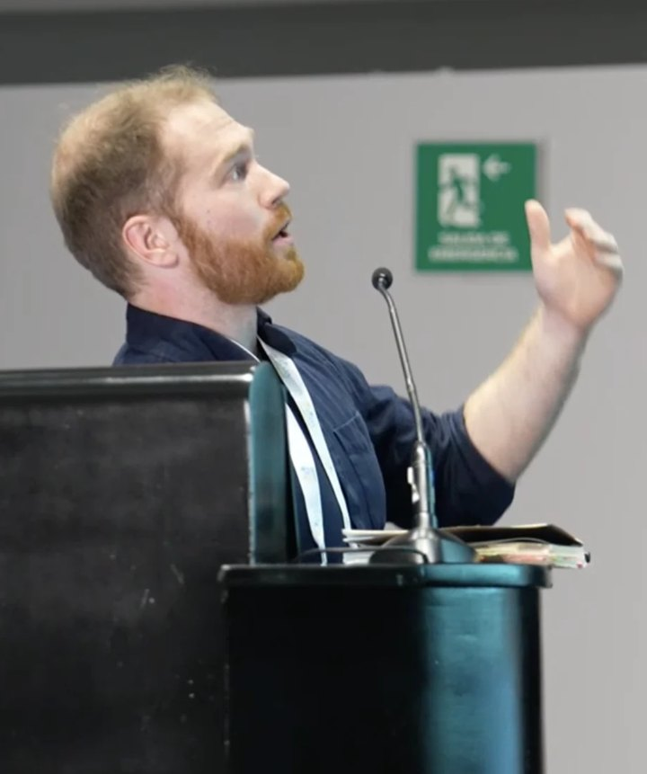

Christopher Curtis
PhD researcher, Khoury College of Computer Sciences, Northeastern University.
I'm a computer science PhD researcher at Northeastern University and a member of the Civic AI Lab, advised by Saiph Savage. My work spans model evaluation, Transformer architectures, and human–computer interaction.
My research connects technical questions about AI capabilities with practical questions about system design. Published and publicly released work includes CIPHERGRID, a benchmark testing whether models can infer an unfamiliar symbolic world from examples and act on its rules; a NeurIPS tutorial on positional encoding in Transformers; and studies of AI tools that support crowdworkers and gig workers.
I am an NSF NRT PEAR Fellow. My background also includes software engineering at Hewlett Packard Enterprise, independent development of simulation and AI tools, and service in the New York Army National Guard Infantry (2022–2025).

Khoury College of Computer Sciences
Northeastern University
Boston, MA
news
| 2026 | Our paper CIPHERGRID was accepted to the NeurIPS 2026 Evaluations & Datasets Track. |
|---|---|
| 2025 | Co-presented the official NeurIPS tutorial Positional Encoding: Past, Present, and Future with Saiph Savage in Mexico City, with teaching code and slides released publicly. |
| 2024 | Selected as an NSF NRT PEAR Fellow at Northeastern (2024–25). |
| 2024 | Co-authored research appearing in ACM PACMHCI / CSCW and the ACM Collective Intelligence Conference. |
selected publications
-
NeurIPSCIPHERGRID Benchmark: From Multimodal Rule Inference to Sequential ActionAdvances in Neural Information Processing Systems (NeurIPS), Evaluations & Datasets Track, 2026 · Accepted, forthcoming
@inproceedings{curtis2026ciphergrid, title = {{CIPHERGRID} Benchmark: From Multimodal Rule Inference to Sequential Action}, author = {Curtis, Christopher and Fragoso, Victor and Savage, Saiph}, booktitle = {Advances in Neural Information Processing Systems}, year = {2026}, note = {Accepted, Evaluations and Datasets Track} } -
CSCWA Culturally-Aware AI Tool for Crowdworkers: Leveraging Chronemics to Support Diverse Work StylesProceedings of the ACM on Human-Computer Interaction (CSCW), 2024
@article{toxtli2024culturally, title = {A Culturally-Aware AI Tool for Crowdworkers: Leveraging Chronemics to Support Diverse Work Styles}, author = {Toxtli, Carlos and Curtis, Christopher and Savage, Saiph}, journal = {Proceedings of the ACM on Human-Computer Interaction}, year = {2024}, doi = {10.1145/3686899} }